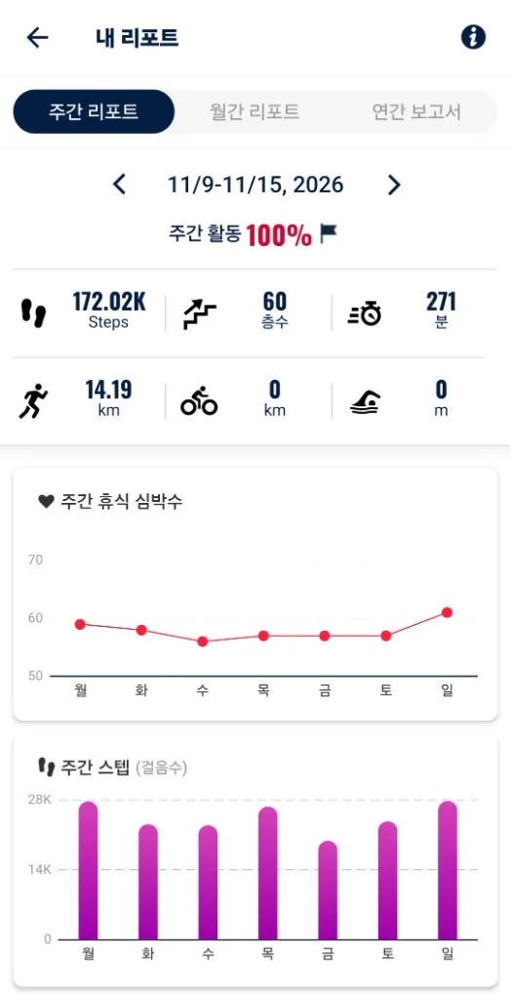

주간 17.2만 보와 안정시 심박수의 경고: 일요일에 먼저 꺾인 그래프와 독감 회복기
"심박수는 거짓말을 하지 않는다. 몸이 무너지기 직전, 그래프가 먼저 고개를 든다."
11월 2주차 주간 걸음수는 172.02K(172,020보, 일평균 24,574보)로 계속 늘었고 주간 활동 100%를 채웠습니다. 하지만 토요일까지 56~58bpm을 지키던 휴식 심박수가 일요일(11/15) 61bpm 선으로 꺾여 오르더니, 이번 주 독감으로 직결되며 심박수가 크게 튀어 올랐습니다.
1. 11월 2주차 (11/9 ~ 11/15) 주간 실측 요약
현장 업무량이 늘어나면서 의식적으로 걷지 않아도 생활 스텝이 16만 보대에서 17.2만 보까지 올라온 한 주였습니다.
| 지표 | 11/9 ~ 11/15 실측 | 해석 |
|---|---|---|
| 주간 총 걸음수 | 172,020보 (172.02K) | 일평균 약 24,574보 · 주간 활동 100% 달성 |
| 러닝 거리 | 14.19 km | 고강도 없이 조깅 위주 유지 |
| 총 활동 시간 / 층수 | 271분 / 60층 | 업무 + 생활 유산소 총량 지속 증가 |
| 휴식 심박수(RHR) | 56~59 bpm ➔ 일요일 ~61 bpm | 주말을 기점으로 면역/피로 신호 급상승 |

2. 독감 전조를 먼저 포착한 안정시 심박수(RHR)
1편에서 세운 대원칙은 "내 몸 상태를 판단하는 기준은 속도가 아니라 아침의 안정시 심박수(54~56bpm)뿐"이라는 것이었습니다. 이번 주 독감으로 고생하면서 그 원칙이 얼마나 정확한 지표인지 몸소 확인했습니다.
월~토요일까지는 평소처럼 56~59bpm 사이에서 차분하게 유지되던 그래프가, 일요일(11/15)에 갑자기 61bpm 쪽으로 꺾여 올라갔습니다. 그리고 바로 이어진 이번 주, 독감 증상이 본격적으로 올라오며 안정시 심박수가 평소보다 훨씬 높게 튀어 올랐습니다.
체온이 오르고 면역계가 바이러스와 싸우기 시작하면, 자각 증상이 심해지기 전부터 심장은 더 빠르게 뜁니다. 걸음수가 17만 보까지 쌓인 상태에서 면역 저하가 겹친 전형적인 신호였습니다.
3. 회복기(Return-to-Run) 운영 원칙: 어제부터 살아난 컨디션, 하지만 서두르지 않는다
다행히 어제부터는 몸이 한결 살아나는 느낌이 들며 회복 국면으로 접어들었습니다. 다만 독감 직후 가장 흔한 실수가 "몸이 좀 괜찮아졌으니 밀린 러닝 거리를 채우자"며 바로 달리는 것입니다.
- 1단계 (현재 · 야식 및 수면 컷오프): 일상 보행과 수면·수분 보충에만 집중하고 러닝은 쉰다. 특히 퇴근 후 야식을 먹으면 수면 중 심박수와 스트레스 지수가 급등하고 HRV(심박변이도)가 바닥으로 꺼지는 것을 실측으로 확인했으므로, 밤 12시 퇴근 후 야식 차단 · 새벽 2시 이전 취침을 기본 원칙으로 고정한다.
- 2단계 (안정심박수 복귀 확인): 아침 휴식 심박수가 다시 평소 기준선(55~57 bpm) 근처로 내려오고 HRV가 회복되는 것을 확인한 뒤에만 3km 가벼운 조깅을 재개한다.
- 3단계 (점진 복귀 & 2026년 마일리지 캡): 회복 첫 주는 페이스와 거리 목표를 지우고, 심박수 130bpm 이하의 완전한 유산소 존에서만 몸을 푼다. 아울러 2026년 연말까지는 주간 러닝 거리를 20km 안쪽으로 고정해 주 17만 보대 현장 업무 부하에 몸이 완전히 익숙해진 뒤에야 거리를 늘려 나간다.